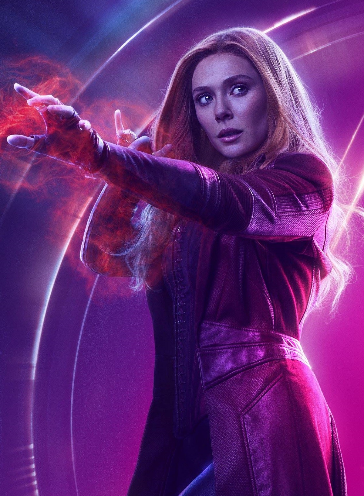

¿Quíen es la Bruja Escarlata (Scarlet Witch)?
La Bruja Escarlata de los Avengers de Marvel es una villana/heroína que no siempre fue poderosa. Conoce la historia de cómo resurgió tras perder a sus padres. La Bruja Escarlata de los Avengers de Marvel, que hoy es una de las villanas/heroínas favoritas de los Vengadores, no siempre fue poderosa. Ella literalmente, resurgió de los escombros de su edificio derrumbado, en el que perdió a sus padres. Esta estrella de Marvel, también conocida como Wanda Maximoff, tiene una historia resiliente que la ha hecho poderosa. Ya que, luego de quedar huérfana y someterse a experimentos adquirió habilidades que intenta perfeccionar para hacer del mundo un lugar mejor.